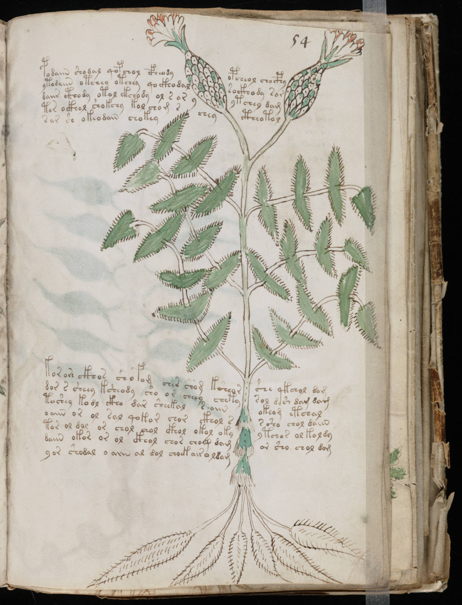

Hypothèses
Depuis sa redécouverte par Wilfrid Voynich en 1912, le manuscrit n'a cessé d'alimenter les débats. Malgré plus d'un siècle de recherches, aucune théorie n'a réussi à s'imposer définitivement. Le texte demeure indéchiffré et les illustrations continuent de susciter de nombreuses interprétations.
Au fil des décennies, linguistes, historiens, cryptologues, informaticiens et simples passionnés ont proposé des centaines d'explications. Certaines reposent sur des travaux universitaires rigoureux, tandis que d'autres relèvent davantage de la spéculation. Le Centre Européen d'Études Voynich ne soutient aucune hypothèse particulière et présente ici les principales pistes explorées à ce jour.
L'hypothèse d'une langue naturelle oubliée
L'une des théories les plus sérieuses considère que le manuscrit est rédigé dans une langue réelle aujourd'hui disparue ou fortement transformée.
Plusieurs chercheurs ont tenté d'établir des rapprochements avec diverses langues européennes ou orientales. Certains ont proposé des liens avec des langues slaves anciennes, d'autres avec des formes médiévales de l'hébreu, du persan ou encore de certains dialectes régionaux aujourd'hui disparus.
Cette hypothèse est renforcée par certaines analyses statistiques. Les mots du manuscrit semblent suivre des distributions comparables à celles observées dans les langues naturelles. On y retrouve des répétitions, des variations et des structures qui paraissent difficiles à reproduire de manière totalement aléatoire.
Toutefois, malgré de nombreuses tentatives, aucune traduction cohérente n'a jamais été reproduite de manière indépendante et vérifiable.
L'hypothèse cryptographique
Dès les premières années suivant sa redécouverte, plusieurs spécialistes du chiffrement ont supposé que le manuscrit contenait un message crypté.
Cette théorie a attiré l'attention de certains des meilleurs cryptologues du XXe siècle. Parmi eux figure William Friedman, célèbre pour ses travaux sur les codes diplomatiques et militaires américains. Malgré plusieurs années d'efforts, Friedman ne parvint jamais à produire un déchiffrement convaincant.
Selon cette hypothèse, le texte visible ne serait qu'une transformation d'un message rédigé dans une langue connue. Le système utilisé pourrait être fondé sur des substitutions complexes, des tables de chiffrement ou des méthodes aujourd'hui oubliées.
Des recherches récentes continuent d'explorer cette piste. Certaines études suggèrent que la structure du texte présente des contraintes proches de celles que l'on pourrait attendre d'un système cryptographique sophistiqué.
L'hypothèse botanique et médicale
La section la plus volumineuse du manuscrit est constituée de dessins de plantes accompagnés de textes descriptifs. Cette observation a conduit de nombreux chercheurs à considérer l'ouvrage comme un traité médical ou pharmacologique.
Dans les manuscrits médiévaux, il était fréquent de répertorier les propriétés des plantes médicinales, leurs usages thérapeutiques et leurs méthodes de préparation.
Le principal obstacle à cette théorie réside dans l'identification des végétaux représentés. La plupart des illustrations semblent combiner des caractéristiques appartenant à plusieurs espèces différentes. Certaines plantes paraissent même totalement imaginaires.
Certains auteurs ont proposé que ces représentations soient volontairement modifiées afin de protéger des connaissances jugées précieuses ou réservées à un cercle restreint de lecteurs.
L'hypothèse astronomique et astrologique
Une partie importante du manuscrit contient des diagrammes circulaires, des constellations, des signes du zodiaque et des représentations célestes.
Ces éléments rappellent fortement les traditions astrologiques et astronomiques de la fin du Moyen Âge. Plusieurs chercheurs estiment que le manuscrit pourrait constituer une compilation de connaissances liées à l'observation du ciel, aux cycles saisonniers ou aux pratiques médicales fondées sur l'astrologie.
Les signes du zodiaque présents dans certaines pages ont permis d'établir plusieurs comparaisons avec d'autres manuscrits européens du XVe siècle.
Toutefois, là encore, aucun élément décisif ne permet d'expliquer l'ensemble du document.
L'hypothèse alchimique
L'alchimie médiévale associait fréquemment observations naturelles, symboles cosmologiques, médecine et philosophie. Certains chercheurs considèrent que le manuscrit pourrait relever de cette tradition intellectuelle.
Les diagrammes complexes, les structures circulaires et certaines illustrations inhabituelles ont parfois été interprétés comme des représentations symboliques de processus de transformation ou de connaissances réservées aux initiés.
Les partisans de cette théorie soulignent que les auteurs médiévaux utilisaient souvent un langage volontairement obscur afin de protéger leur savoir.
Cependant, aucun symbole alchimique classique n'a été identifié de manière certaine dans le manuscrit.
L'hypothèse de la langue construite
Une autre possibilité est que le texte ne corresponde à aucune langue connue mais à une langue artificielle créée spécialement pour l'ouvrage.
L'idée n'est pas aussi improbable qu'elle peut sembler. De nombreuses langues construites ont existé dans l'histoire, bien avant les exemples modernes tels que l'espéranto.
Selon cette théorie, l'auteur aurait conçu un système linguistique original afin de transmettre des connaissances à un groupe limité de lecteurs ou simplement dans le cadre d'une expérimentation intellectuelle.
Cette hypothèse expliquerait certaines particularités du vocabulaire observé dans le manuscrit.
L'hypothèse du canular
Probablement la théorie la plus célèbre auprès du grand public, elle considère le manuscrit comme une mystification particulièrement élaborée.
Selon cette interprétation, le texte serait essentiellement dépourvu de sens et aurait été conçu afin d'impressionner un commanditaire, un mécène ou un collectionneur fortuné.
Les partisans de cette théorie soulignent qu'aucune traduction fiable n'a jamais été obtenue malgré plus d'un siècle de recherches intensives.
Ses détracteurs rappellent toutefois que la fabrication du manuscrit a nécessité des ressources considérables : parchemin de qualité, illustrations nombreuses, organisation interne cohérente et centaines de pages de texte. Beaucoup jugent difficile d'imaginer un effort aussi important consacré à une simple supercherie.
Les approches informatiques modernes
Depuis le début du XXIe siècle, les progrès de l'analyse statistique et de l'intelligence artificielle ont permis de renouveler l'étude du manuscrit.
Des chercheurs utilisent aujourd'hui des méthodes inspirées du traitement automatique du langage afin d'étudier les fréquences de symboles, les structures de mots et les régularités présentes dans le texte.
Ces travaux ont produit des résultats intéressants mais n'ont pas encore permis de résoudre définitivement le mystère.
À l'heure actuelle, le manuscrit de Voynich demeure l'un des plus célèbres textes non déchiffrés de l'histoire. Plus de six siècles après sa création probable, il continue d'échapper aux interprétations définitives et de fasciner aussi bien les spécialistes que les amateurs.

Illustration fréquemment citée dans les études botaniques.
Dernière mise à jour : mars 2024